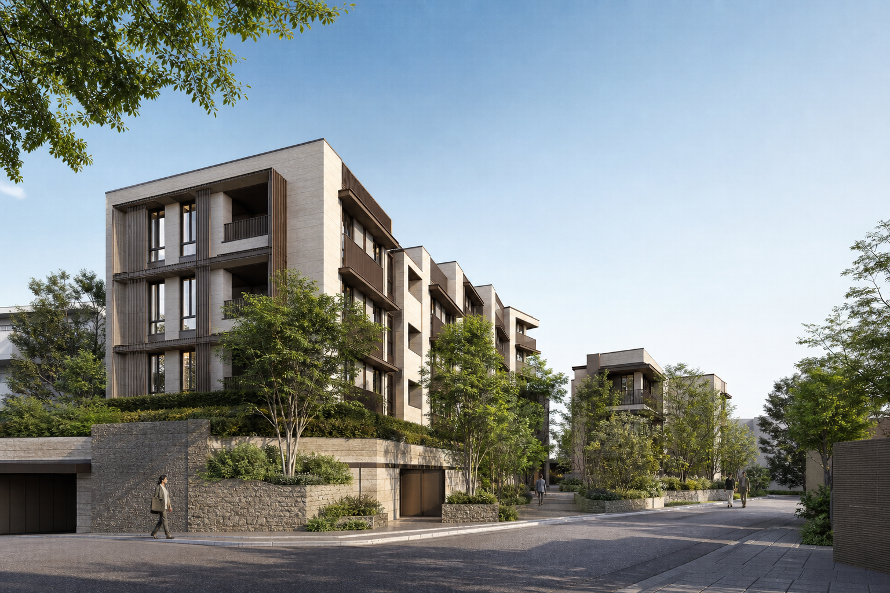
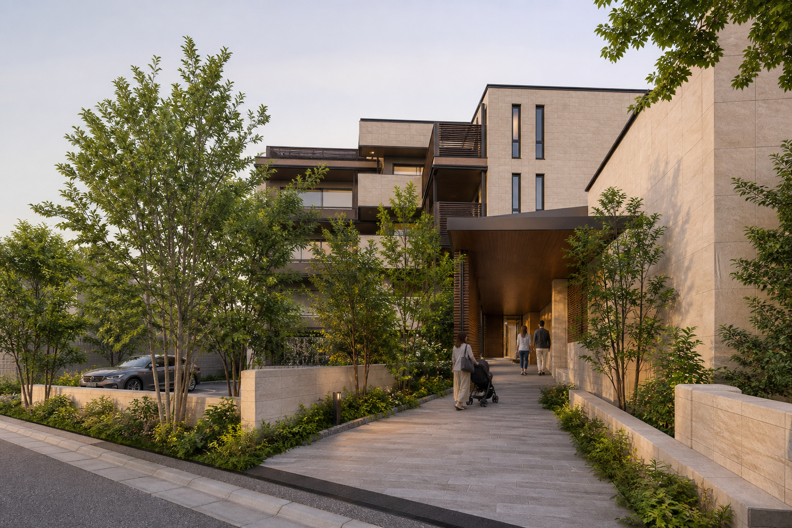
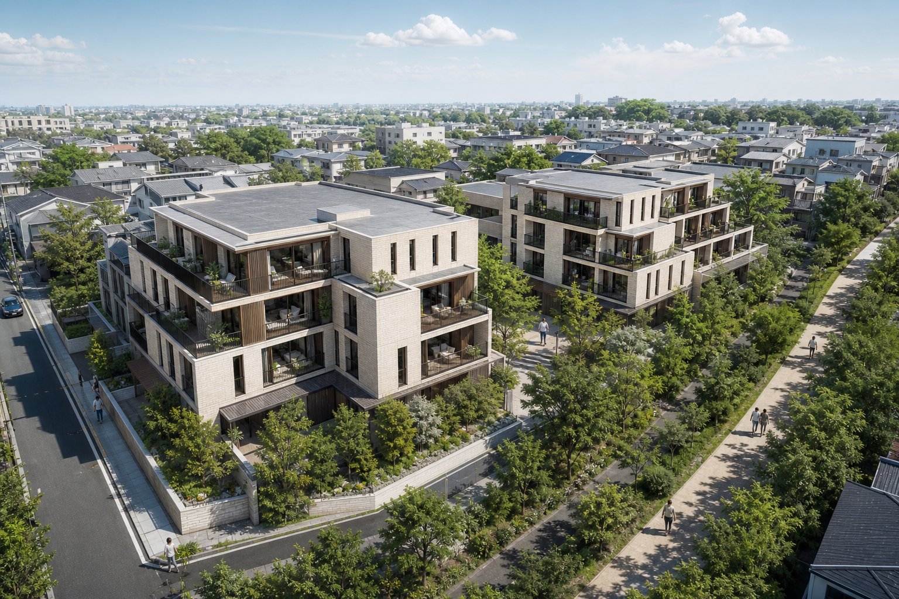
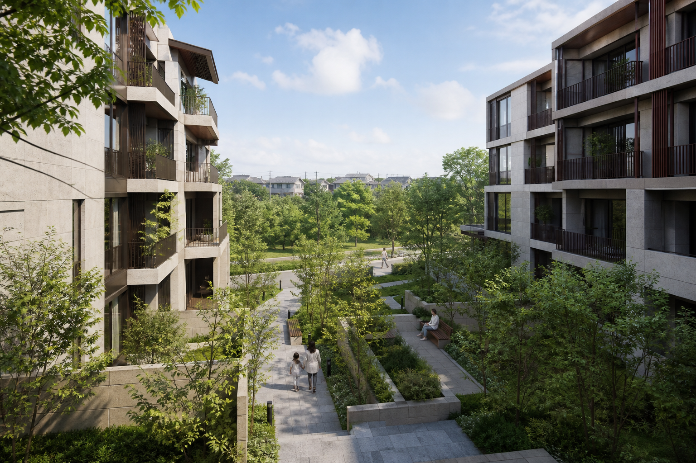

日常の買い物
駅前から住宅地へ、食品や生活用品の店を帰宅動線上で使えます。

YOYOGI-SHIMOHARA 4 MIN.
JARDIN YOYOGI SHIMOHARA
代々木下原駅 徒歩4分京西線・都心メトロ千代木線
2LDK 6,000万円台から
3LDK 7,200万円台から
INFORMATION
販売情報や今後のご案内は、この公式サイトで順次お知らせします。
THE QUIET CENTER
駅から徒歩4分。にぎわいのすぐ先で、街の歩調はゆっくりになる。
都心への移動を軽やかにしながら、帰宅後の時間は静かに整えていく。本形町二丁目に描いたのは、便利さと落ち着きのどちらも暮らしの基準にするための住まいです。
名称の『ジャルダン』は、フランス語で庭を意味します。長く培われた住環境を受け止め、二つの住棟を庭のまわりへ穏やかに配置しました。外へ急ぐ朝も、家族と歩く休日も、同じ場所に自然な余白が生まれます。
地上4階・2棟・全248邸。約14,600㎡の敷地に描く低層レジデンス。
POSITION / ACCESS
京西線と都心メトロ千代木線が乗り入れる代々木下原駅。仕事にも休日にも、目的地へまっすぐつながります。
京西線 都心メトロ千代木線
二つの路線を一つの駅で使い分けられるから、日々の予定に合わせた移動がしやすい。オフィス街へ向かう平日も、文化や買い物を楽しむ週末も、乗車時間を暮らしの中心に持ち込まない距離感です。
駅から現地までは、商店の並ぶ通りから低層住宅地へ続く徒歩4分。大きな幹線道路を長く歩かず、街の表情がゆるやかに切り替わります。
掲載の所要時間は平日日中時の標準的な運行をもとにした目安です。待ち時間、時間帯による運行差、乗換時間を含め、実際の所要時間は異なる場合があります。
ARCHITECTURE / DESIGN

建物の輪郭を一枚の壁として見せず、二つの棟をずらしながら配置。視線の抜けと植栽の間をつくり、低層の街並みへ段階的になじむ構成としました。
外装は淡い石材を基調に、ブロンズ調の金属と濃色の木調ルーバーを重ねます。光を受けて表情を変える素材と、奥行きのあるバルコニー、端正な縦長窓が、落ち着いたリズムを生み出します。
エントランスは道路から住まいまでを一直線に見通させず、植栽と壁を沿わせたアプローチで構成。街の気配から住まいの静けさへ、歩く速度に合わせて場面を切り替えます。
地上4階の高さを生かし、空と樹冠が身近に感じられる水平基調の佇まいへ。
淡い石、ブロンズ調金属、濃色木調を組み合わせ、華美に寄らない品格を整えます。
深いバルコニーと縦長窓の陰影が、長い外壁に住戸ごとのリズムを与えます。


LANDSCAPE / COURTYARD
二つの住棟のあいだには、空へ大きく開いた中庭を設けます。通り抜けるだけの共用部ではなく、朝の光や葉の揺れを感じながら立ち止まれる、住まいの中心です。
中央は見通しを確保し、周縁には高さの異なる樹木と低木を重ねます。ベンチのある小さな居場所、子どもと歩ける緩やかな動線、雨上がりにも季節を感じられる植栽をゆるやかにつなぎます。
敷地東側の緑道とは植栽の連続性を持たせ、街の緑を敷地の中だけで完結させません。住む人と地域の人、それぞれの距離を保ちながら、歩く楽しさが続く景観を目指します。
四季の変化と見通しを両立する、住棟中央の開放的な庭。
エントランスから各棟へ、植栽の間を穏やかにつなぐ歩行動線。
既存の街路景観と呼応し、東側の緑道へつながる緑の縁。
LOCATION
個人店と生活施設、住宅地の緑が近い代々木下原。日々の選択肢を、無理なく歩ける範囲に。
駅前には日用品をそろえる店があり、その先の路地には、朝から開くベーカリーや小さなカフェ、暮らしの道具を扱う店が点在します。目的を一つに決めず歩けることが、この街の使いやすさです。
低層住宅の間には小さな公園や緑道があり、通勤の近道も、子どもと遠回りする道も選べます。便利な施設を集めるだけでなく、毎日の移動そのものが心地よくなる住環境です。
駅前から住宅地へ、食品や生活用品の店を帰宅動線上で使えます。
カフェ、ベーカリー、工房など、店主の顔が見える店が路地に点在します。
公園や緑道、住宅の庭木が連なり、季節の変化を身近に感じられます。
教育・医療・子育て支援など、家族の日常を支える施設が街の中にあります。
PLAN
2LDKは約55〜65㎡、3LDKは約70〜82㎡。働く場所、集まる場所、ひとりで過ごす場所を、住戸の中に無理なく整えます。
2LDK
約55〜65㎡
6,000万円台から
二人の暮らしから子育て期まで、居室とリビングを柔軟に使えるプラン帯。
3LDK
約70〜82㎡
7,200万円台から
家族それぞれの居場所と収納量を確保し、在宅勤務にも対応しやすいプラン帯。
キッチンからリビング・ダイニングを見渡しやすく、家族の気配が自然につながる構成。
個室やリビングの一角に、仕事や学習へ切り替えやすい場所を確保できる計画。
玄関まわりと各居室へ収納を分散し、日用品を生活動線に沿って収めやすくします。
奥行きあるバルコニーと縦長窓を生かし、外の光や緑を室内へ導きます。
掲載の面積は住戸タイプ全体の予定範囲です。間取り、面積、仕様は住戸により異なります。
PROPERTY OUTLINE
次回更新予定日は、販売準備の進捗に合わせて本サイトでお知らせします。
このWebサイトの内容はフィクションであり、実在のお店・人物・団体とは一切関係がありません。